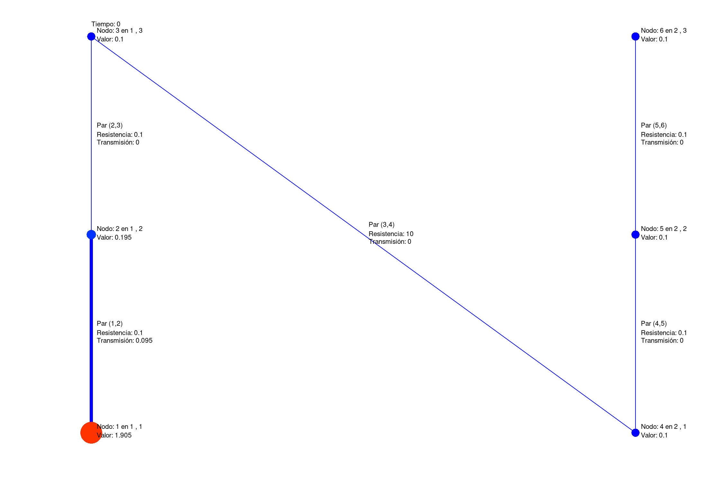

Esta actividad se centra alrededor de la simulación de la transmisión de una cierta propiedad a través de un conjunto de nodos.
Si un par de nodos está conectado, la propiedad puede pasar de La tasa de transmisión de la propiedad entre un nodo y otro depende del valor de la propiedad en cada uno de ellos, trasmitiendose la propiedad desde aquellos nodos donde su valor es más alto a aquellos donde es más bajo. Además, cada par de nodos puede tener cierto valor de resistencia a la transferencia asociado.
Varias situaciones podrían ser modeladas con esta estructura. Esta tabla presenta algunos ejemplos:
| Disciplina | ¿Qué representa un nodo? | ¿Qué representa el valor de la propiedad? | ¿Qué representa que dos nodos estén conectados? | ¿Qué representa el valor de la resistencia a la transferencia? |
|---|---|---|---|---|
| Mecánica de Fluidos | Tanques de agua | Altura del agua | Existencia de una cañería entre esos tanques | Largo y complejidad de la cañería |
| Transferencia de Calor | Región del espacio | Temperatura | Si se encuentran aislados térmicamente | Material a través del cual esta difundiendo la energía |
| Transferencia de Masa | Región del espacio | Concentración | Si puede transferirse masa entre un nodo y otro | Propiedades del compuesto y del medio en el que difunde |
| Epidemiología | Individuo | Carga viral | Si los individuos tienen contacto entre sí | Estrechez del contacto |
| Sociología | Individuo | \% de acuerdo con cierta opinión | Si los individuos tienen contacto entre sí | Grado de confianza en las opiniones del otro de cada par |
El script simular_difusion.m está preparado para realizar una simulación de una estructura de este tipo. La simulación va ocurriendo a lo largo de diferentes instantes de tiempo. En cada paso de cálculo, el script calcula la transferencia que se produce a través de cada conexión, y por lo tanto como varia la concentración en cada nodo. Genera un gráfico que se va actualizando a medida que avanza la simulación.
El código se encuentra listo para ser probado, por lo que para visualizarlo es necesario que descarguen los archivos dentro de una carpeta que se elija dentro de GNU/Octave, y ejecutar el script simular_difusion.m
El comportamiento de la simulación puede influenciarse a través de la modificación de algunas funciones que utiliza el código provisto.
Su grupo debe proveer una implementación de cada una de estas 4 funciones, modificando la simulación en la forma en que deseen.
Se proveen dos ejemplos correctos de cada una de estas 4 funciones. Además, se provee un tercer archivo con una implementación minimamente funcional tal que puedan realizar su implementación en él.
Para cambiar cuál de los archivos la simulación utiliza para cada función, se debe modificar el archivo TableroQuimico.m. Se sugiere hacerlo comentando o no lineas con los nombres de los diferentes archivos. Para ello, se provee el número de linea en TableroQuimico.m que hay que modificar.
Dentro del script también es posible configurar:
El tiempo total que dura la simulación (variable tiempoFinal en la linea 4).
Valor que controla el nivel global de difusión (variable coeficiente en la linea 5)
Cuanto tiempo se pausa el script para que se grafique correctamente (variable tiempoPausa en la linea 7). Esta variable puede utilizarse para ajustarse a diferentes velocidades de performance de octave, o inclusive aumentarla para poder visualizar lentamente cada paso de simulación. La variable se especifica en segundos.